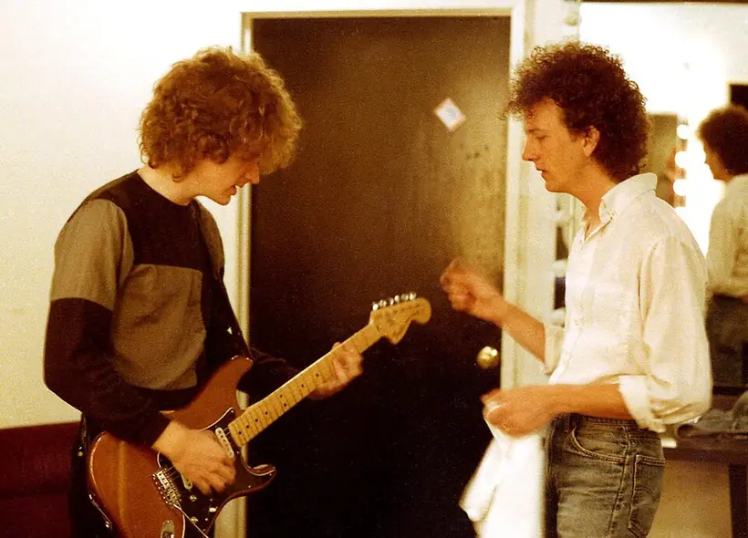

The argument
Douglas Hofstadter introduced the idea in his 1983 Scientific American column. Suppose two players are perfectly rational and know each other to be perfectly rational, and both know the game. Then whatever reasoning one performs, the other performs too, and reaches the same answer.
Maps, diagrams and images



Under that assumption, defecting does not gain you anything: your opponent's choice is correlated with yours because it is produced by the same procedure. So you should choose the strategy that maximises the payoff of both players acting alike — which in a prisoner's dilemma is mutual cooperation.
Hofstadter called the resulting policy superrational. It is a cousin of Kant's categorical imperative and of the golden rule, derived from decision theory rather than ethics: act as though your choice were a decision about what everyone in your position does.
Why it is philosophically live and empirically thin
The idea seeded a family of formal theories — evidential decision theory, Wei Dai's timeless decision theory, and functional decision theory from Soares and Levinstein — which try to make 'your decision is evidence about other implementations of your algorithm' precise, and to apply it to Newcomb's problem and to cooperation between AI agents.
The obvious problem is the assumption. Real people are not identical algorithms: they differ in information, in rationality, in mood. Superrationality gives a sharp answer in the toy case and almost no guidance in the world, where the question is always how similar is similar enough.
It also produces uncomfortable results elsewhere. Parfit's hitchhiker, the toxin puzzle and the prisoner's dilemma with a thousand strangers all get counter-intuitive answers from the same machinery, which is a warning that the machinery is doing more work than the intuition.
Not fringe in the pejorative sense: the problem is taken seriously by decision theorists and by people designing protocols for machine cooperation, and functional decision theory is a live research programme.
Fringe as a claim about the world: nothing in the empirical record shows that human beings behave superrationally, and the assumption of identical reasoning is false for every real pair of people.
What would count as evidence: experiments on 'team reasoning' and on correlated decision-making find some support for group-level reasoning, but nothing like the perfect correlation the theory needs.
The archive labels it fringe because it is a beautiful normative proposal with no established descriptive counterpart — an argument about how an ideal agent should choose, not a finding about how anyone does.
Why it is in the archive
Because it is the cleanest example of a theory whose conclusion is only as strong as an assumption that is usually smuggled in without comment.
Related: rational choice voting, the Lindy effect.
Sources for this page
- Wikipedia, “Superrationality” — the argument and its descendantsen.wikipedia.org
- Hofstadter (1983), Metamagical Themas — “Dilemmas for Superrational Thinkers”www.scientificamerican.com
- Wikipedia, “Functional decision theory” — the modern formal descendanten.wikipedia.org
- Wikipedia, “Newcomb’s paradox” — the case the theory is built to handleen.wikipedia.org
Open resources on this topic
- PapersOpen-access articles: DOAJ · PubMed Central · Internet Archive Scholar
- BooksPublic-domain and borrowable copies: Open Library · Project Gutenberg · Google Books · Internet Archive
Cite this page
Momin, S. (2026). Superrationality. The Larger World Archive. https://drsamonline.github.io/LARGE_GLOBE/superrationality.htmlMomin, Sohil. “Superrationality.” The Larger World Archive, 2026, https://drsamonline.github.io/LARGE_GLOBE/superrationality.html.Momin, Sohil. “Superrationality.” The Larger World Archive, 2026. https://drsamonline.github.io/LARGE_GLOBE/superrationality.html.@misc{superrationality2026superrationality,
author = {Momin, Sohil},
title = {Superrationality},
year = {2026},
howpublished = {The Larger World Archive},
url = {https://drsamonline.github.io/LARGE_GLOBE/superrationality.html},
note = {Last reviewed 20 November 2026}
}Last reviewed 20 November 2026 · Corrections policy · this page is not peer reviewed